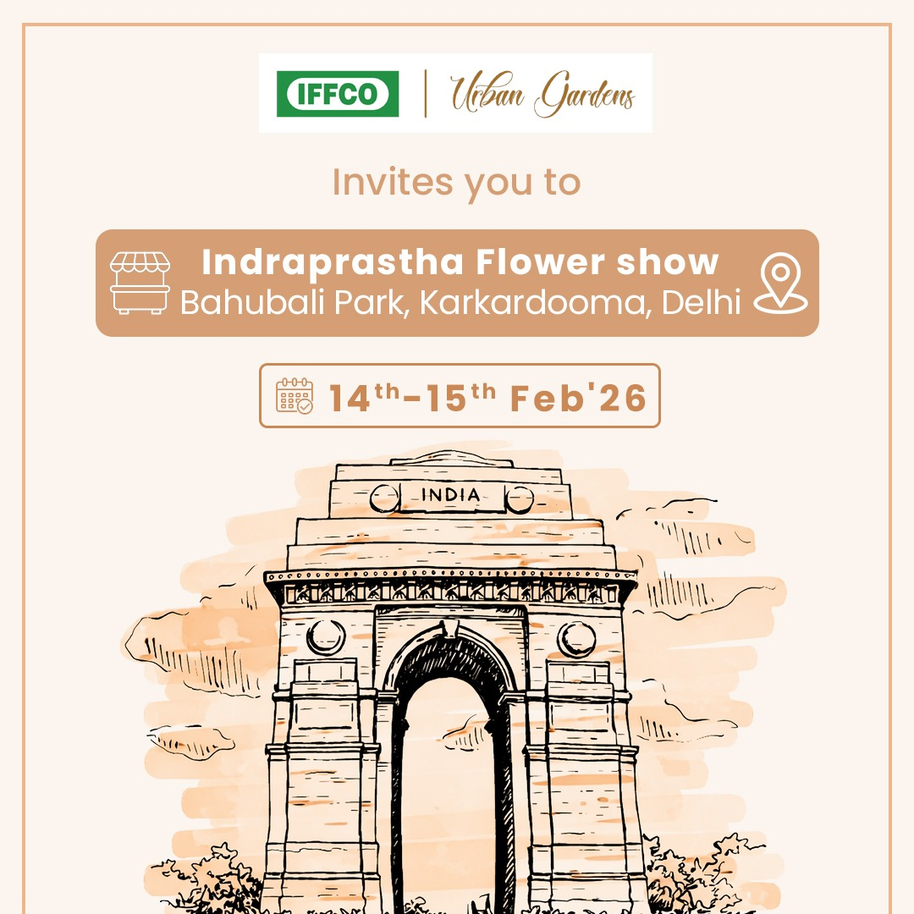
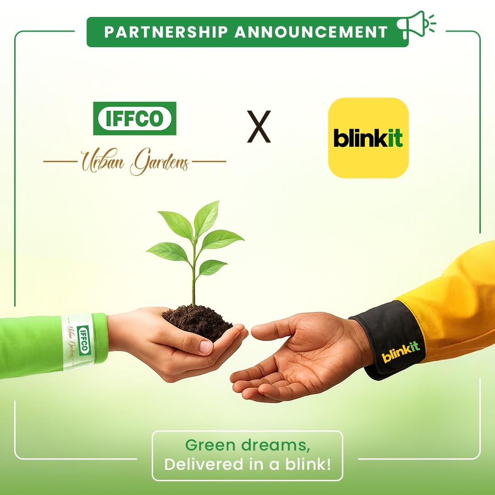
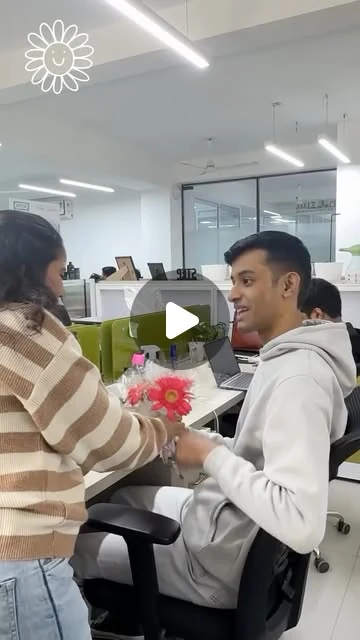

All selected workSocial
03 / Selected work
Social
& motion.
Plant-care stories, social graphics and motion, bringing ideas into still frames and moving sequences.

Social graphics for IFFCO Urban Gardens: selected plant-stress carousel frames, an Indraprastha Flower Show invitation and a partnership announcement with blinkit. Seven motion pieces follow, from seasonal plant-care ideas to workplace greenery and a partner story.
- Context
- IFFCO Urban Gardens · Employment work
Additional motion pieces - Role
- Graphic design & motion
- Scope
- Social graphics, sequential carousels and motion content
Stories for the scroll.
Carousel frames & posts





Frame by frame.
A clear opening.
An opening statement sets up the story before supporting frames develop the message.
Continuity in the details.
Repeated typography, image treatments and placement help related frames read as a sequence.
Selected motion work / 07 films
Motion, in context.
Seven stories for IFFCO Urban Gardens, from seasonal ideas to people, plants and places.
When this gallery is focused, use the left and right arrow keys to scroll between videos. Open a preview to watch its original social post.

Watch on Instagram ↗Flowers for Men’s Day
InstagramA little appreciation, in bloom.
Summer plant care
InstagramPlant care for warmer days.
Gardening myths
InstagramA fresh look at familiar gardening advice.
New Year plant stories
InstagramStarting a new year with a little green.
Gardens through Gardeners’ Lens
LinkedInWorld Photography Day.
A greener workstation
LinkedInIndia’s summers, workspaces and greenery.
The Garden Nest
LinkedInMurali Krishna shares his IFFCO Urban Gardens experience.
7 videos
Open a preview to watch. Playback is provided by Instagram or LinkedIn.